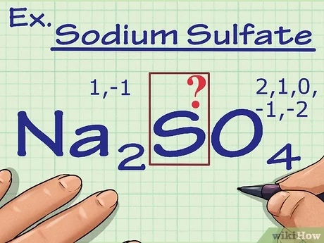

Callout
The Oxidation Numbers Method
In the oxidation number method, you determine the oxidation numbers of all atoms. Then you multiply the atoms that have changed by small whole numbers. You are making the total loss of electrons equal to the total gain of electrons. Then you balance the rest of the atoms.

Step 1: Write the unbalanced chemical equation from the given information. Determine the oxidation numbers for each element in the equation and identify the elements for which the oxidation numbers change.
Step 2: Adjust the values of the coefficients to balance the electrons transferred.
Step 3: Balance the rest of the equation by inspection. If necessary, balance oxygen by adding water.
Step 4: If necessary, balance hydrogen by adding H1(aq) and/or OH2(aq).
Step 5: Write the balanced equation.